Git 基本操作
[toc]
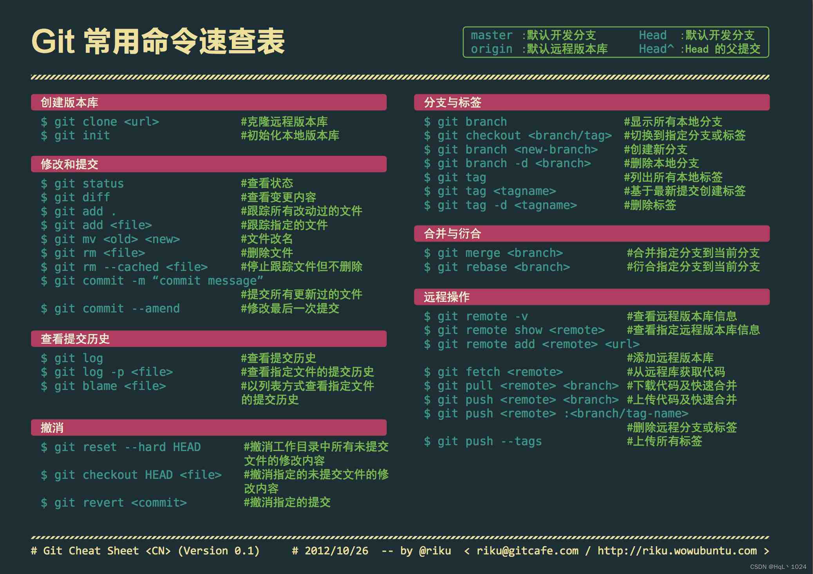
一、基本概念
Git 是一种分布式版本控制系统，用于跟踪和管理代码的变更。它最初是由 Linus Torvalds 开发的，用于管理 Linux 内核的源代码。
Git 在软件开发中被广泛应用，尤其是在团队协作和开源项目中。通过使用 Git，开发人员可以更好地管理代码、协同工作、追踪问题和版本发布等。
1、工作区域
Git 管理项目时，文件流转的三个工作区域：Git 的工作目录，暂存区域，以及本地仓库。
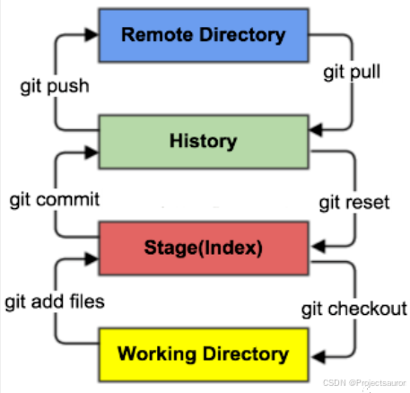
你的本地仓库由 Git 维护的三棵”树”组成。
- 工作目录：它持有实际文件；
- 暂存区（Index）：它像个缓存区域，临时保存你的改动；
- 本地仓库（Respository）：可以把本地仓库理解成一个目录，这个目录中所有的文件都可以被Git管理起来每个文件的删除、修改、新增操作都可以被 Git 跟踪到以便任何时候，都可以追踪历史或者还原到之前的某一个版本
2、文件状态
对于任何一个文件，在 Git 内都只有三种状态：已修改（modified），已暂存（staged）和已提交（committed）。
- 已修改表示修改了某个文件，但还没有提交保存；
- 已暂存表示把已修改的文件放在下次提交时要保存的清单中；add
- 已提交表示该文件已经被安全地保存在本地数据库中了。commit
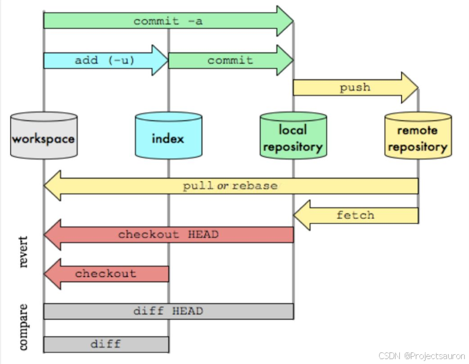
二、基本使用
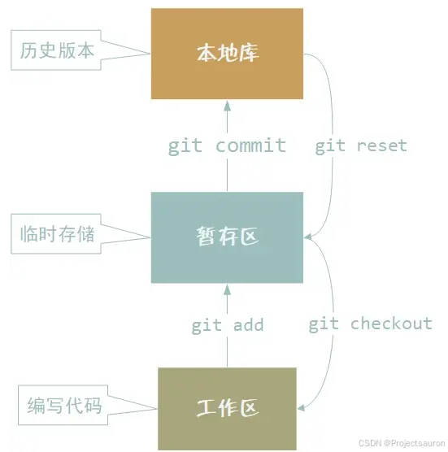
1、设置用户标识
当你安装 Git 后首先要做的事情是设置你的用户名称和 e-mail 地址。这是非常重要的，因为每次 Git 提交都会使用该信息。它被永远的嵌入到了你的提交中：
1 | |
只需要做一次这个设置，如果你传递了 --global 选项，Git 将总是会使用该信息来处理你在系统中所做的一切操作。如果你希望在一个特定的项目中使用不同的名称或 e-mail 地址，你可以在该项目中运行该命令而不要 --global 选项。总之 --global 为全局配置，不加为某个项目的特定配置。
2、初始化仓库
1 | |
该命令执行完后会在当前目录生成一个 .git 目录。
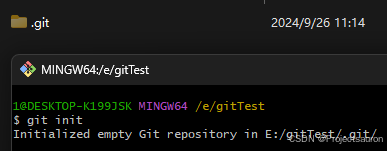
3、提交文件到暂存区
现在在新建一个文件：
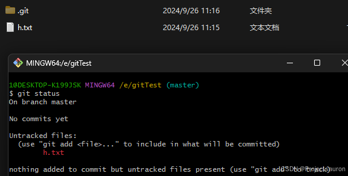
通过命令 git status 可以查看当前文件状态，显示有一个未跟踪的文件 h.txt。
下面就可以尝试把文件提交到暂存区，使用 git add 命令：
1 | |
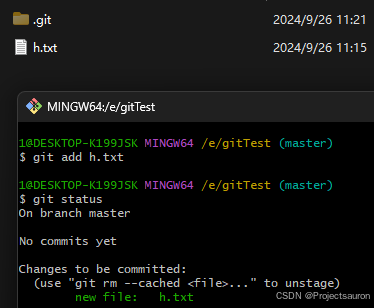
4、提交到本地库
1 | |
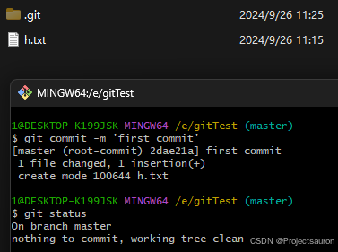
到目前为止，已经把改动提交到 HEAD 了，但是还没有到远程仓库。
可以使用 git log 查看所有的提交：
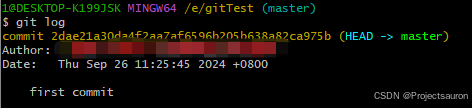
5、推送到远程仓库
执行如下命令以将这些改动提交到远端仓库：
1 | |
可以把 master 换成你想要推送的任何分支。
如果你还没有克隆现有仓库，并欲将你的仓库连接到某个远程服务器，你可以使用如下命令添加：
1 | |
如此你就能够将你的改动推送到所添加的服务器上去了。
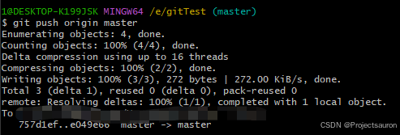
git remote
1 | |
5.1 错误说明
如果你的远程仓库已经是创建好的，并且要提交的分支上有内容的话（push 时会提示远程库与本地库不一致造成的错误，如下图），要先 pull 到本地，再重新 push。
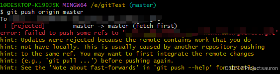
先执行如下命令：（master 换成你要拉取的分支）
1 | |
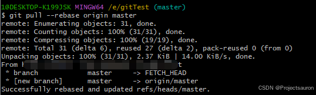
然后再重新 push 就正常了。
6、克隆
通过 git clone 命令可以克隆远程仓库到本地：
1 | |
三、分支操作
分支是用来将特性开发绝缘开来的。在你创建仓库的时候，master 是”默认的”分支。在其他分支上进行开发，完成后再将它们合并到主分支上。
下面是 Git 中分支操作的常用指令：
1 | |
1、查看分支
1 | |
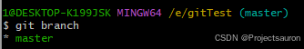
此例的意思就是，我们有一个叫做 master 的分支，并且该分支是当前分支（前面有 *）。执行 git init 的时候，默认情况下 Git 就会为你创建 master 分支。分支在本地完成，速度快。
2、创建分支
1 | |
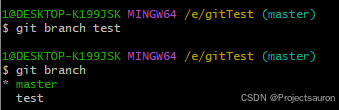
3、切换分支
通过如下命令可以切换分支：
1 | |
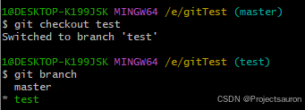
下面的指令更便捷，可以同时实现刚才提到的两个功能：
1 | |
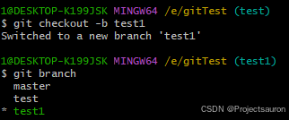
4、合并分支
现在在 test1 分支上修改文件 h.txt，然后 commit：
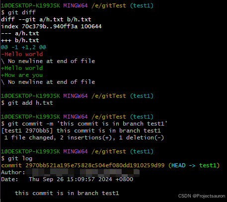
然后切换回主分支合并：
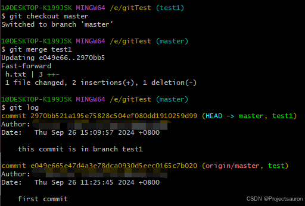
对其他分支的更改不会反映在主分支上。如果想将更改提交到主分支，则需切换回 master 分支，然后使用合并。
5、删除分支
使用 -d 标识，把新建的分支删掉：
1 | |
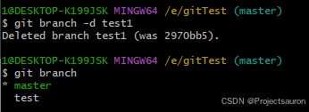
6、上传分支
除非你将分支推送到远端仓库，不然该分支就是 不为他人所见的：
1 | |
四、替换本地改动
假如操作失误可以使用如下命令替换掉本地改动：
1 | |
此命令会使用 HEAD 中的最新内容替换掉你的工作目录中的文件。已添加到暂存区的改动以及新文件都不会受到影响。
步骤见下图：
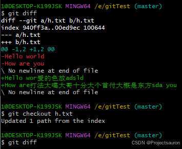
先修改了 h.txt，然后执行 git checkout h.txt，然后所有改动都被删除了。
假如你想丢弃你在本地的所有改动与提交，可以到服务器上获取最新的版本历史，并将你本地主分支指向它：
1 | |
五、重置
当我们不想要之前提交的修改时，就会用到这个命令。也许这是一个 错误的提交或者可能是引入了 bug 的提交，这时候就要执行 git reset。
git reset 能让我们不再使用当前台面上的文件，让我们可以控制 HEAD 应该指向的位置。
1、软重置
软重置会将 HEAD 移至指定的提交（或与 HEAD 相比的提交的索引），而不会移除该提交之后加入的修改！
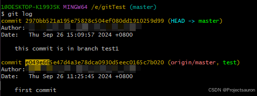
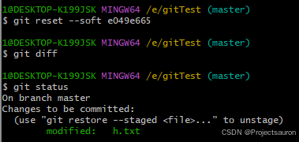
输入 git status 后，你会看到我们仍然可以访问在之前的提交上做过的所有修改。
这意味着我们可以修复这些文件的内容，之后再重新提交它们！
2、硬重置
有时候我们并不想保留特定提交引入的修改。不同于软重置，我们应该再也无需访问它们。
Git 应该直接将整体状态直接重置到特定提交之前的状态：这甚至包括你在工作目录中和暂存文件上的修改。
我们重新 add 并 commit，然后硬重置：
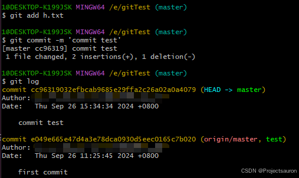
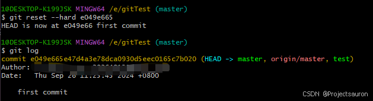
回去查看文件 h.txt，添加的内容已经不存在，而我们所有提交的信息也都已经被移除。
六、还原
另一种撤销修改的方法是执行 git revert。
通过对特定的提交执行还原操作，我们会创建一个包含已还原修改的新提交。
这个在新建一个 hh.txt 文件并提交：
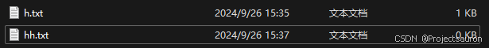
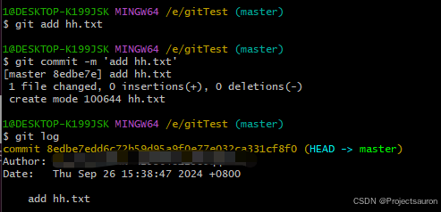
用 git revert 撤销修改
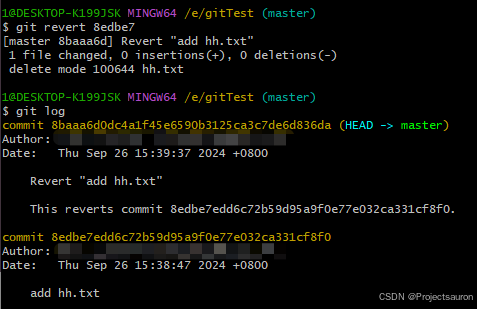
有上图所示，执行 git revert 8edbe7 后，新增的 hh.txt 被删除了，并新提交了一个 commit。此前添加 hh.txt 的提交还在，这样就保留了该提交信息，提高了仓库的兼容性。
七、拣选
当一个特定分支包含我们的活动分支需要的某个提交时，我们对那个提交执行 cherry-pick。
对一个提交执行 cherry-pick 时，我们会在活动分支上创建一个新的提交，其中包含由拣选出来的提交所引入的修改。
创建切换到 cherry 分支：
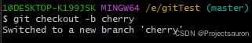
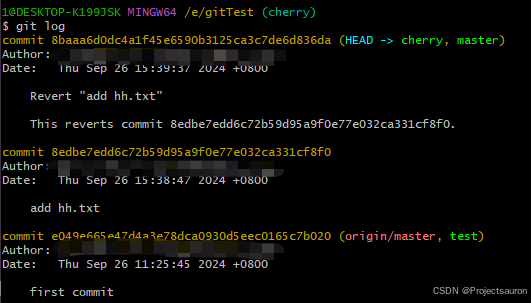
然后在分支 cherry 上修改文件 h.txt 并提交几个节点：
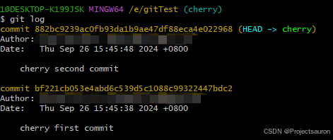
切回 master 分支：
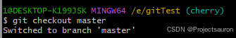
执行：git cherry-pick bf221cb05
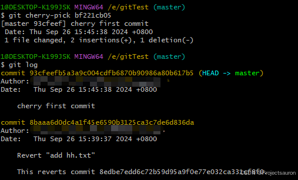
由上图所示，分支 cherry 的 commit bf221cb05，被复制到分支 master，并创建了 1 个新的提交 93cfeef。
通过该命令我们就可以将其他分支，需要的提交，合并到主分支 master。